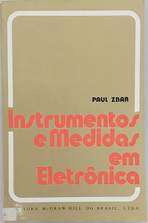

Instrumentos e Medidas em Eletrônica - Paul Zbar
Sobre o livro:
O livro aborda o eixo quantitativo da elétrica e da eletrônica com o uso de instrumentos de medição para tal feito. Cada experiência mostrada aqui é precedida pela discussão das características do instrumento utilizado.
Imagens:
Onde Encontrar?
Estante 08, Prateleira 02, Seção Elétrica e Eletrônica
Código do Livro
2936
Outras informações:
- Número de páginas: 229;
- Autor: Paul Zbar;
- Editora: McGraw-Hill do Brasil Ltda.